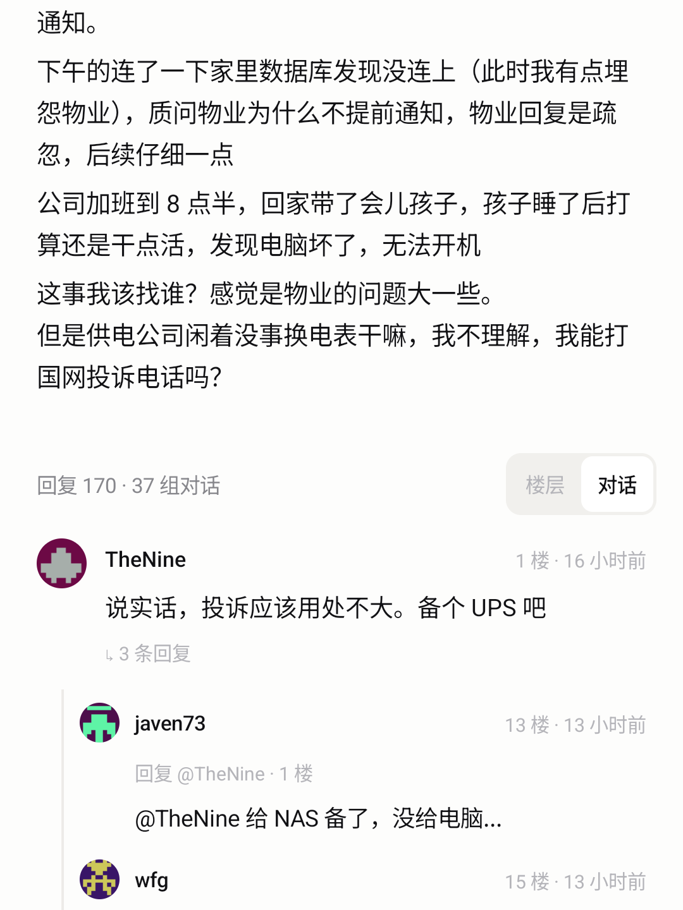
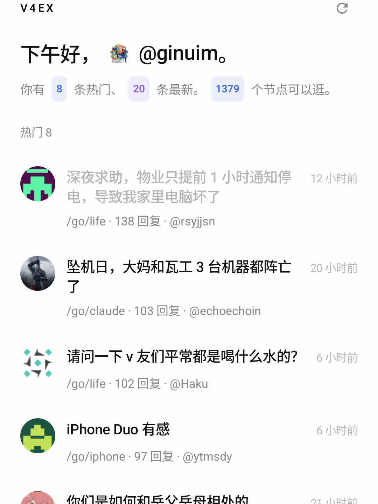

只读客户端 · Kotlin
我把 AI
摘要删掉了
170 楼压成 4 条要点,读起来很顺——然后你就只记得那 4 条了。
语气、跑题、互怼,恰好是 V2EX 最有意思的地方。滤掉就没了。
「摘要」不是
「理解」
第一版认真做了 AI 摘要卡:一句话、要点、分歧、值得读几星。省事,但省掉的是楼层的语气、跑题和互怼。
摘要版
4 条要点
170 楼收成四行。信息没丢,分歧没了。
原样版
170 楼都在
自己决定哪几楼值得读。已读置灰,没读的留着。
回复没有
parent 字段
V2EX 的回复接口只给一个平铺列表,「谁在回谁」得自己从正文里推。
#12
先认楼层引用 且必须比当前楼更早
@某人
再认已经发过言的人 挂到他最近一条更早的回复
兜底
推不出来就留在顶层 宁可少连,不要乱连
渲染
缩进一级 + 一条竖线 祖孙再深也压到同一级,手机屏宽有限

把「刷」
做顺手
01
已读置灰
02
只看未读
03
缓存秒开
04
节点本地搜索
05
下拉刷新不闪白
06
楼层 / 对话切换
节点 · Nodes
全部内置,断网也能搜名字。
1379
打开就是
上次的样子
缓存先上屏,新数据随后补进来。

启动
先渲染本地缓存 十几 KB 的列表字段,不存正文
接着
后台静默拉新 和下拉刷新分开,启动时不弹转圈
失败
保留旧缓存 断网时看到的是上次,不是错误页
已读
打开就记,最多留 800 条 标题从 #111114 变 #B4B4B9
分享面板
一开始是空的
功能写完,点开分享——一个 App 都没有。
Android 11+
New Task
App Label
Floor Link
它不是
更好的客户端
只是把「读」这件事做干净。
01
02
03
一个只读的 V2EX 客户端
我把 AI 摘要删掉了
筛完的要点像嚼过的饭,留下语气、跑题和互怼。
170
Floor
1379
Nodes
0
UI 库
AI 摘要
删掉了
只读 V2EX 客户端,帖子原样呈现。不填令牌也能用。